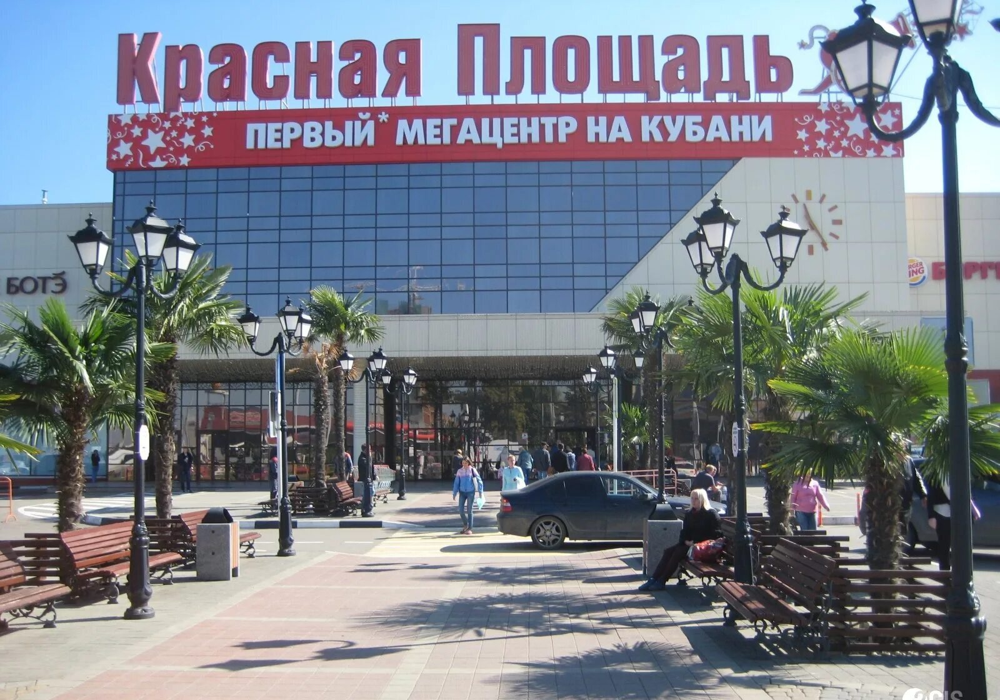
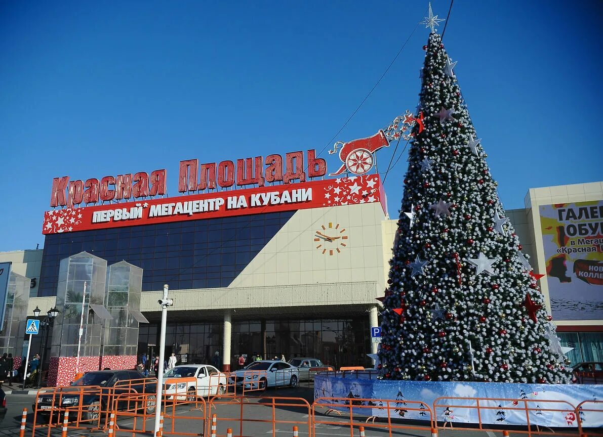
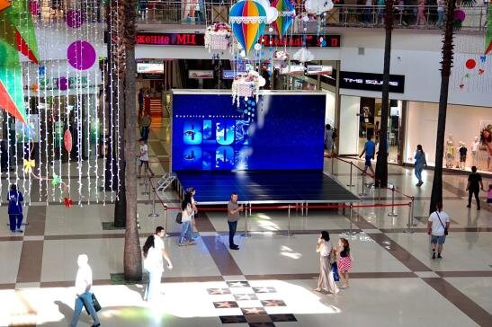
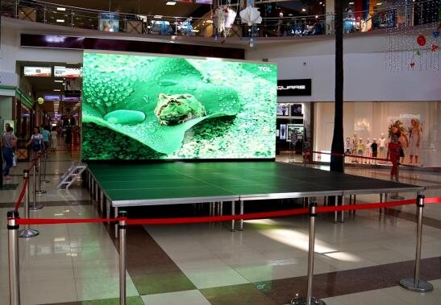

800 м от гостиницы
800 метров от гостиницы
ТЦ «Красная площадь» в 800 метрах от гостиницы «Подсолнух»
Первый мегацентр Кубани — в 800 метрах: магазины, кино, фудкорт и кафе. Дойти можно пешком, машину оставить во дворе гостиницы.
- Покупки и ужин в 10 минутах пешком
- Кинотеатр и фудкорт на вечер
- Машина стоит во дворе гостиницы, а не на платной парковке ТЦ
- Из номера можно дойти и до других точек района
Как добраться и почему это удобно
«Красная площадь» — большой торговый центр на Дзержинского: одежда и обувь, техника, детские товары, кинотеатр, фудкорт и десятки кафе. От гостиницы до него около 800 метров, то есть 10 минут спокойным шагом.
Гостям это удобно по простой причине: не нужно никуда ехать за покупками или ужином. Забыли что-то из вещей — дошли и купили. А вечером вернулись в тихий двор, где стоит ваша машина.
Если приехали на несколько дней с семьёй, номера на 3–4 гостей и кухня в номере заметно экономят бюджет: завтраки готовите сами, а в торговый центр идёте за развлечениями, а не за обязательным обедом.
🌻 Фотографии
Фото: ТЦ «Красная площадь»
Нажмите на снимок, чтобы открыть его крупнее.



📍 На карте
ТЦ «Красная площадь» и гостиница «Подсолнух»
Остановитесь в «Подсолнухе»
ТЦ «Красная площадь» — около 800 метров от гостиницы. Номера с кухней, парковка во дворе, бронь напрямую у собственника.
Цена зависит от даты и количества гостей — уточним по телефону до заселения.